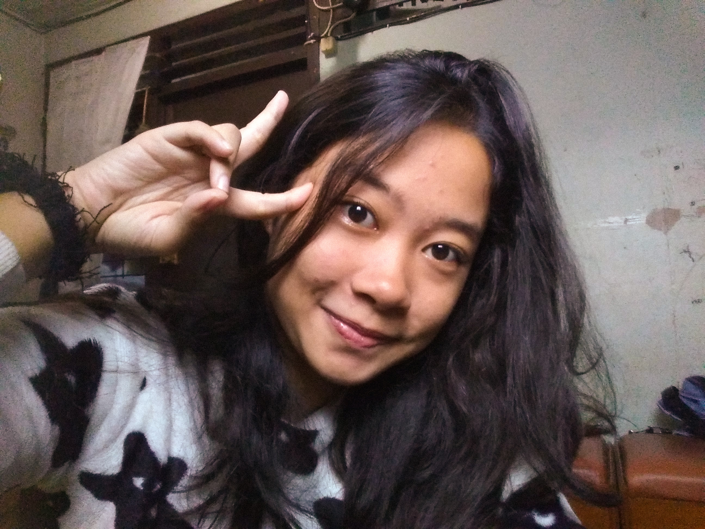

Welcome gengs!
ABOUT
Hai! Nama saya Angela yang memiliki arti 'Malaikat'. Lahir dan besar di Bogor pada 14 April 2002 sebagai anak ke-2 dari 3 bersaudara dengan bobot 3,6 kg dan tinggi 41 cm. Kakak perempuan saya, Stefani Puspita Dewi yang berbeda 3 tahun dengan saya sekarang ini sedang menjalani kuliah dan bekerja. Adik laki-laki saya, Matthew Johanson Nugroho yang berbeda 15 tahun dengan saya ini sudah bisa berjalan dan sedang dalam proses belajar berbicara.
Menurut google, orang-orang yang memiliki zodiak Aries (salah satunya saya) mempunyai kepercayaan diri yang besar, jujur, mempunyai tekad, berani, bergairah, dan impulsif. Seringkali bersifat idealistis dan terkadang terburu-buru, dengan kepribadian dinamis yang terkadang terlalu keras kepala. Lebih senang bekerja tanpa bantuan orang lain dan menyukai debat, walaupun mereka merasa cukup sulit untuk menerima saat orang lain tidak setuju dengan mereka. Sepertinya itu sudah cukup menggambarkan tentang kepribadian saya.
Sebagai seorang introvert, saya suka membaca novel di tempat yang jauh dari keramaian. Saya senang membaca beberapa karya dari Tere Liye, Fiersa Besari, dan Dwitasari. Dan sekarang saya sedang menekuni buku "Nanti Kita Cerita Tentang Hari Ini" yang sangat memotivasi dan menyejukkan hati! Berbagai macam sajak pun saya tekuni dan itu memunculkan sedikit demi sedikit minat saya untuk membuat sajak.
Ingin tahu mors out! lihat ini!
follow me on instagram : @angelagbrl
see you!